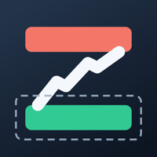

For iPhone, iPad and Mac
Zoner charts any symbol with its supply and demand zones, from Monthly to 1 Minute, each chart showing the next timeframe up's zones too. It only reads market data, with your own Tradier account.
Support and privacy pages for the app will be here soon.